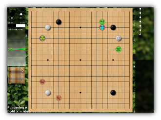

Pachi
Pachi can refer to: a simple modular framework for programs playing the game of Go/Weiqi/Baduk, and a reasonably strong engine built within this framework.
Engine
The default engine plays by Chinese rules and should be about 7d KGS strength on 9x9. On 19x19 it can hold a solid KGS 2d rank on modest hardware (Raspberry Pi 3, dcnn) or faster machine (e.g. six-way Intel i7) without dcnn.
When using a large cluster (64 machines, 20 cores each), it maintains KGS 3d to 4d and has won e.g. a 7-stone handicap game against Zhou Junxun 9p.
By default, Pachi currently uses the UCT engine that combines Monte Carlo approach with tree search; UCB1AMAF tree policy using the RAVE method is used for tree search, while the Moggy playout policy using 3x3 patterns and various tactical checks is used for the semi-random Monte Carlo playouts. MM patterns are used in the tree search.
Installation
To install Pachi simply unzip the binary release somewhere.
pachi.exe is a GTP client. Connect to it
to your favorite Go interface (e.g.
gogui,
sabaki,
lizzie ...),
or use kgsgtp to connect it to KGS.
DO NOT make the GTP interface accessible directly to untrusted users since the parser is not secure - see the HACKING file for details.
The pachi program can take many parameters. The defaults should be fine for initial usage, see below for some tips.
Deep Learning
Pachi uses a neural network as source of good moves to consider. With dcnn support Pachi can play at dan level strength on modest hardware. For large number of playouts this makes it about 1 stone stronger, and tends to make the games more pretty. A raw dcnn engine is available for pure dcnn play (not recommended for actual games, pachi won't know when to pass or resign !).
pachi --list-dcnn List supported networks.
pachi --dcnn=name Choose network to use (Detlef's 54% dcnn by default).
Releases come with Detlef's 54% dcnn by default.
For other networks see Pachi Networks.
Currently dcnn is used for root node only.
How to run
By default Pachi will run on all cores, using up to 300Mb (win64: 600Mb) of memory for tree search and taking a little under 10 seconds per move. You can adjust these parameters by passing it extra command line options.
For main options description try:
pachi.exe --help
Time Settings
Pachi can smartly deal with a variety of time settings (canadian byoyomi recommended to maximize efficient time allocation). However, most of these are accessible only via GTP, that is by the frontend keeping track of time, e.g. KGS or gogui.
It's also possible to force time settings via the command line (GTP time settings are ignored then):
pachi.exe -t 2020s per move.pachi.exe -t _60010 minutes sudden death.pachi.exe -t =50005000 playouts per move.pachi.exe -t =5000:15000Think more when needed. Same but up-to 15000 playouts if best move is unclear.pachi.exe -t =5000:15000 --fuseki-time =4000Don't think too much during fuseki.
Fixed Strength
Pachi will play fast on a fast computer, slow on a slow computer, but strength will remain the same:
pachi.exe -t =5000:15000 --dcnn=dfkgs 3d.pachi.exe -t =5000:15000kgs 2d.pachi.exe --nodcnn -t =5000kgs 3k (mcts only).
Other Options
pachi.exe resign_threshold=0.25Resign when winrate < 25% (default: 10%).pachi.exe -t =5000:15000 threads=4,max_tree_size=100This will make Pachi play with max 15000 playouts per move on 4 threads, taking up to 100Mb of memory (+ several tens MiB as a constant overhead). It should be about 2d with dcnn and large patterns setup (default).
pachi.exe -t _1200 --no-dcnn threads=8,max_tree_size=3072,ponderingThis will make Pachi play without dcnn with time settings 20:00 S.D. with 8 threads, taking up to 3GiB of memory, and thinking during the opponent's turn as well.
Logs
Pachi logs details of its activity on stderr, which can be viewed via Tools->GTP Shell
in gogui. Tons of details about winrates, memory usage, score estimate etc can be found here.
Even though most of it available through other means in gogui, it's always a good place to look in case
something unexpected happens.
-d <log_level> changes the amount of logging (-d0 suppresses everything)
-o log_file log to a file instead. gogui live-gfx commands won't work though.
Batch File
pachi.bat can be used to keep options in one place.
Tip: If your Go Program doesn't let you run .bat files directly give it cmd.exe instead:
C:\Windows\System32\cmd.exe /c C:\path\to\pachi.bat
Analyze commands
When running Pachi through GoGui, a number of graphic tools are available
through the Tools->Analyze commands window:
- Best moves
- Score estimate
- DCNN ratings ...
It's also possible to visualize best moves / best sequence while Pachi is thinking via the live gfx commands.
There are some non-gui tools for game analysis as well in the repository.
Lizzie
{kind=link}
It's also possible to run Pachi with Lizzie to analyze things ! This is a great way to explore variations, analyze games or visualize what Pachi is doing while it's thinking, the graphics are amazing.
To make Lizzie use Pachi instead of Leela-Zero edit Lizzie config.txt:
"engine-command": "/path/to/pachi --version=0.16",
Or see homepage to download Lizzie+Pachi binary release.
More
See homepage for more info.
Also, if you are interested in Pachi's architecture, algorithms etc., consider taking a look at Petr Baudis' Master's Thesis:
http://pasky.or.cz/go/prace.pdf
...or a slightly newer scientific paper on Pachi:
http://pasky.or.cz/go/pachi-tr.pdf
Licence
Pachi is distributed under the GPLv2 licence (see the COPYING file for details and full text of the licence); you are welcome to tweak it as you wish (contributing back upstream is welcome) and distribute it freely, but only together with the source code. You are welcome to make private modifications to the code (e.g. try new algorithms and approaches), use them internally or even to have your bot play on the internet and enter competitions, but as soon as you want to release it to the public, you need to release the source code as well.
One exception is the Autotest framework, which is licenced under the terms of the MIT licence (close to public domain) - you are free to use it any way you wish.